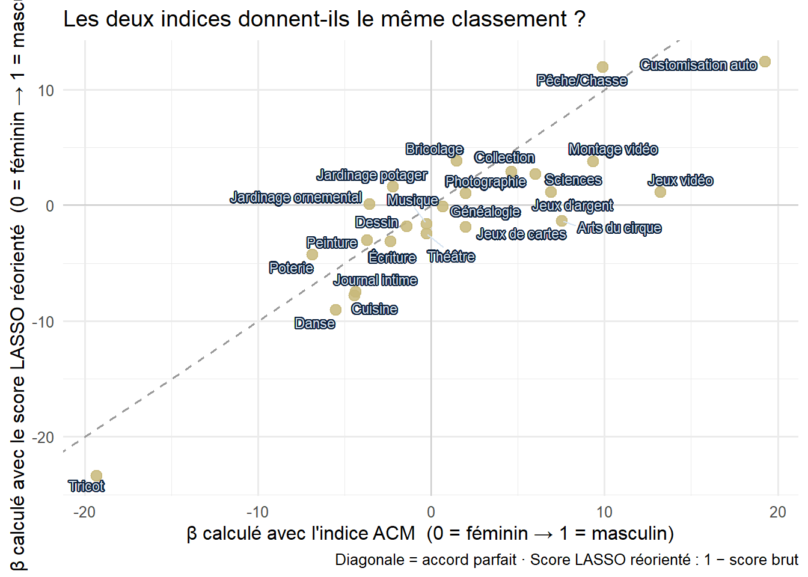

L’indice continu de ségrégation
Comment mesurer la ségrégation quand l’identité est un spectre
Du binaire au continu : l’idée
L’indice de Duncan compare deux moyennes : le taux de participation des hommes vs celui des femmes. Notre indice pose une question différente :
La participation à cette pratique augmente-t-elle ou diminue-t-elle régulièrement quand on se déplace du pôle féminin vers le pôle masculin du spectre identitaire ?
Indice de Duncan
Deux boîtes → une différence
Indice continu β
Un spectre → une pente
La formule, expliquée simplement
L’indice \(\beta_k\) est calculé par une régression logistique :
\[\Pr(\text{pratiquer } k) = \frac{1}{1 + e^{-(\alpha_k + \beta_k \cdot \hat{\iota}_i)}}\]
NoteCe que ça signifie en clair
On cherche la pente qui prédit le mieux la participation à la pratique \(k\) à partir de la position identitaire \(\hat{\iota}_i\) (avec 0 = pôle féminin, 1 = pôle masculin dans les deux cas).
Cette pente, c’est \(\beta_k\) — notre indice de ségrégation.
Interprétation de \(\beta_k\) :
β ≪ 0
Pratique fortement féminine
ex : tricot (β ≈ −19)
ex : tricot (β ≈ −19)
β < 0
Pratique à tendance féminine
ex : peinture (β ≈ −4)
ex : peinture (β ≈ −4)
β ≈ 0
Pratique neutre
ex : musique, théâtre
ex : musique, théâtre
β > 0
Pratique à tendance masculine
ex : bricolage (β ≈ +1,4)
ex : bricolage (β ≈ +1,4)
β ≫ 0
Pratique fortement masculine
ex : customisation (β ≈ +19)
ex : customisation (β ≈ +19)
Tester les deux indices : ACM ou LASSO ?
WarningRappel sur les orientations
Le score LASSO brut est orienté en sens inverse de l’ACM (0 = masculin, 1 = féminin). Nous utilisons ici 1 − score_LASSO_norm pour que les deux indices soient comparables : 0 = féminin, 1 = masculin dans les deux cas.
TipComment lire ce graphique
- Points sur la diagonale : les deux méthodes sont d’accord sur la direction et l’intensité
- Points au-dessus : le LASSO juge la pratique plus masculine que l’ACM
- Points en dessous : l’ACM juge la pratique plus masculine que le LASSO
- Les quatre quadrants correspondent aux cas où les deux indices s’accordent (Q1 = masculine/masculine, Q3 = féminine/féminine) ou divergent (Q2/Q4)